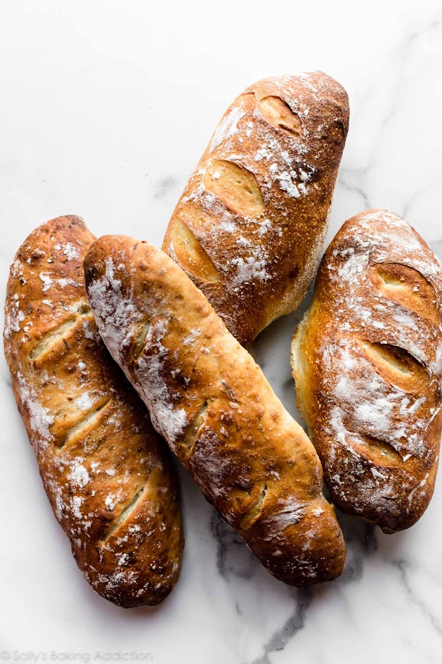

Domaći krug jedan je od najjednostavnijih recepata koji možemo pripremiti kod kuće.Potrebno je samo nekoliko osnovnih sastojaka,malo vremena i strpljenja.
Količina vode može se prilagoditi ovisno o vrsti brašna.Omjer vode i
brašna može se zapisati kao voda / brašno
Za ovaj recpet koristimo približno 60% vode u odnosu na količinu brašna

Temperatura pečenja može biti oko 220oC Vrijeme pečenja ovisi o veličini kruha.
Tijesto treba biti mekano i lagano ljepljivo.Ako je tijesto pretvrdo,potrebno je dodati malo vode.Ako je previše ljepljivo,može se dodati mala količina brašna.
Ako želite naučiti više o pečenju kruha,posjetite stranica o kruhu
Kemijska formula vode je H2O ,a temperatura od
100oC predstavlja vrelišta vode pri normalnom
atmosferskom tlaku.
Jednostavan postupak za provjeru je :
Umijesi - ostavi - oblikuj - ispeci